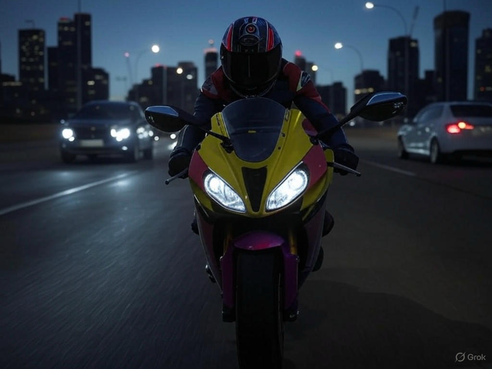

Traffic Rider: Download Now for Unlimited Money and an Unstoppable Gaming Experience
If you love high-speed motorcycle racing games, then Traffic Rider is the perfect game for you. With stunning graphics, realistic bike physics, and endless racing excitement, this game delivers an adrenaline-pumping experience like no other. The best part? You can now download the latest version of Traffic Rider Mod APK with unlimited money, unlocking all bikes, upgrades, and customization options right from the start. No more grinding for coins—just pure, unbridled racing fun!
Why Traffic Rider Stands Out Among Racing Games
Unlike many other racing games that focus only on flashy visuals, Traffic Rider combines smooth gameplay with a realistic riding experience. The first-person perspective puts you right in the driver's seat, making every turn, every overtake, and every near-miss feel incredibly immersive. The traffic AI is smart, meaning cars and trucks react dynamically, forcing you to stay sharp and focused.
The game offers multiple modes, including Career, Endless Ride, and Time Trial, each providing a unique challenge. Whether you prefer completing missions or just cruising freely on the highway, Traffic Rider has something for everyone. And with unlimited money, you can instantly unlock the fastest bikes and upgrade them to their maximum potential without any restrictions.
Unlimited Money – The Ultimate Game Changer
Let's be honest—earning in-game currency can sometimes feel like a second job. You race, you complete tasks, you collect coins, but progress can be slow. That's where the modified version of Traffic Rider comes in. With unlimited money, you skip the grind and dive straight into the action. Want that sleek Ninja H2R? Buy it. Need to max out your engine and brakes? Done.
Having unlimited resources means you can experiment with different bikes and upgrades without worrying about costs. Feel like turning your ride into a speed demon? Go for it. Prefer a balanced setup with great handling? That's an option too. The freedom to customize your bike exactly how you want makes the game infinitely more enjoyable.
Stunning Graphics and Realistic Sound Effects
One of the first things you'll notice when playing Traffic Rider is how good it looks. The bikes are meticulously designed, with detailed textures and realistic reflections. The environments—whether it's a sunny highway or a night ride through the city—are vibrant and full of life. The dynamic day-night cycle and weather effects add another layer of immersion, making every race feel fresh.
The sound design is equally impressive. Each bike has its own unique engine roar, from the deep growl of a cruiser to the high-pitched scream of a sportbike. The rush of wind as you hit top speed, the screech of tires when you take a sharp turn—it all comes together to create a truly engaging experience.
Smooth Controls for an Unmatched Riding Experience
A great racing game needs great controls, and Traffic Rider delivers. You can choose between tilt, touch, or button controls, depending on your preference. The handling is responsive, making it easy to weave through traffic or pull off daring overtakes. Even at high speeds, the bikes feel stable yet thrilling to maneuver.
With unlimited money, you can fine-tune your bike's handling to perfection. Adjust the acceleration, top speed, and braking to match your playstyle. Whether you're a casual player or a hardcore racing fan, the controls are intuitive enough for anyone to pick up and enjoy.
Endless Replay Value with Multiple Game Modes
What keeps players coming back to Traffic Rider is the variety of gameplay options. The Career mode offers a series of missions that gradually increase in difficulty, testing your speed, precision, and reflexes. Completing these missions is even more satisfying when you have the best bikes at your disposal.
If you prefer a more relaxed experience, Endless Ride mode lets you cruise without any pressure. Just hit the open road and enjoy the scenery. Time Trial mode, on the other hand, is perfect for competitive players who want to beat their best records. With unlimited money, you can always switch bikes and strategies to shave off those extra seconds.
Regular Updates and New Content
The developers behind Traffic Rider consistently roll out updates, adding new bikes, tracks, and features to keep the game exciting. With the latest version, you get access to all the newest content without waiting. New challenges, improved mechanics, and even more customization options ensure that the game never gets stale.
How to Download Traffic Rider with Unlimited Money
Getting Traffic Rider with unlimited money is simple. Just search for the latest modded APK version from a trusted source, download it, and install. Make sure to enable installations from unknown sources in your device settings, and you're good to go. Within minutes, you'll have unlimited coins and all bikes unlocked, ready to dominate the roads.
Final Thoughts – Why You Should Play Traffic Rider Today
If you're looking for a motorcycle racing game that offers speed, excitement, and endless customization, Traffic Rider is the perfect choice. The unlimited money feature takes the experience to the next level, removing all barriers and letting you enjoy the game to its fullest.
So why wait? Download Traffic Rider now, hop on your dream bike, and race without limits. The open road is calling—will you answer?